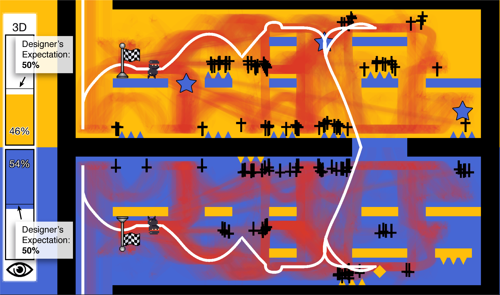
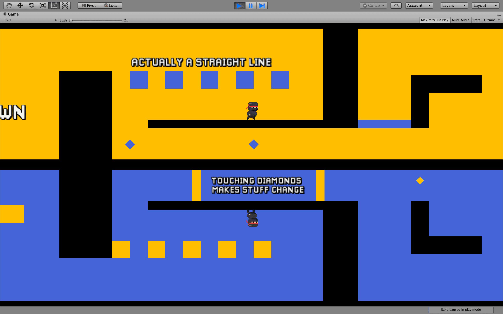
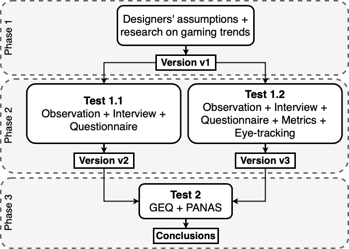
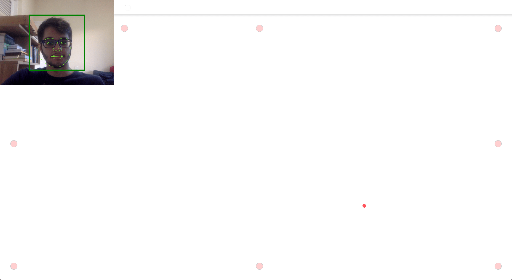

This is a repository for supplementary information about the game Downside Up and it's companion paper titled Evaluating the Use of Affordable User Testing and Visualization Techniques in Level Design of a Hardcore 2D Platform Game, available here.
The project is a collaborative work by Arthur Bastos, Emanuele Santos, George Gomes and Marcos Mourão. We would like to thank FUNCAP for funding the author Arthur Bastos through a scholarship.
We analyze the inclusion of two affordable complementary methods, namely webcam-based eye-tracking and telemetry, along with data visualization in a playtesting routine.
By developing three versions of a hardcore 2D platform game that demands multitasking abilities using different GUR methods, we were able to find that the chosen complementary methods cover a significant amount of gameplay issues.
Metrics and eye-tracking data visualization provided insights about multitasking and level design.
Furthermore, we discuss the challenges of evaluating prototypes with relation to a more enjoyable experience when frustration is a desired gameplay element.
Downside Up is a hardcore 2D platform game in which players must guide an avatar through two mirrored screens.
Objects may appear in only one of those screens, besides existing in both, so players must use their gaze to understand and overcome challenges.
The game is composed of three levels, and each level consists of smaller challenges. There are 18 challenges altogether. We expect players to finish the game in 40 minutes.
Features:
We believe the game contains mechanics that subvert the usual 2D platform genre design expectations, thus making it enjoyable and an exciting opportunity for research.
The game was developed using Unity to build our WebGL prototypes. We also used a custom 2D Platformer controller. We discuss in the paper the fundamental design philosophies adopted for this game.
You can play all versions of Downside Up online (desktop-only). Please keep in mind that these were the exact versions participants played for this research. Levels from v1 were kept in separate builds so we could use our data analysis tools more efficiently. To control the character use the arrow keys. To jump, press spacebar. You can play the game in the following links:
Alternatively, you can see full speedruns and level design descriptions:
Our approach intends to evaluate to what extent user research improves the level design of 2D games using Downside Up as a case study.
We consider in the context of this research that overall level design quality is directly related to what players perceive as "fun", which is the positive emotional response to learning, puzzle-solving and overcoming challenges.
We do not rigorously evaluate aspects of the game experience that could be considered fun, such as flow, immersion, and attention. Our work assesses fun through user-reported emotions. To assess it, we applied translated edits of two questionnaires: the Game Experience Questionnaire (GEQ) core module and post-game module and the Positive and Negative Affect Scale (PANAS).
In Phase 1, there is the development of the first version of Downside Up (v1) based on assumptions about the game's target audience.
Then, in Phase 2, there is the first user test with v1 (Test 1.1), which provided data for a series of level design changes that were applied to v1 to generate a new version (v2). A second test with v1 adopting different methods (Test 1.2) produced a new set of design recommendations that, after applied to v1, generate v3.
Finally, in Phase 3, players play either v2 or v3 and fill the GEQ and the PANAS questionnaires (Test 2). The results are then compared to determine which of these versions is the most fun to play.
We modified WebGazer to track to which portion of the computer screen players were looking and produce logs. Unity itself also logs the avatar's X and Y positions in-game and timestamps every frame.
Surveys were applied either manually in paper or digitally through Google Forms.
We used R to analyze data in Phase 3. You can download the files here.
We were able to find through the proposed methodology interesting data about Downside Up's design, Games User Research and the intrinsinc limitations of this research. You can check excerpts here:
A detailed discussion about these topics is presented in our paper. Results from Phase 2 reveal many usability issues such as spikes positioned in ways that lead to unfair deaths, platforms that require movements hard to perform, section where it is difficult to maneuver the avatar and others. Results from Phase 3 reveal insights about fun, frustration and difficulty. In our paper, we explain how these results translated into level design modifications that improve the overall quality.
We evaluated the use of affordable methods in level design of a 2D platform game and found interesting questions about:
Future work includes: